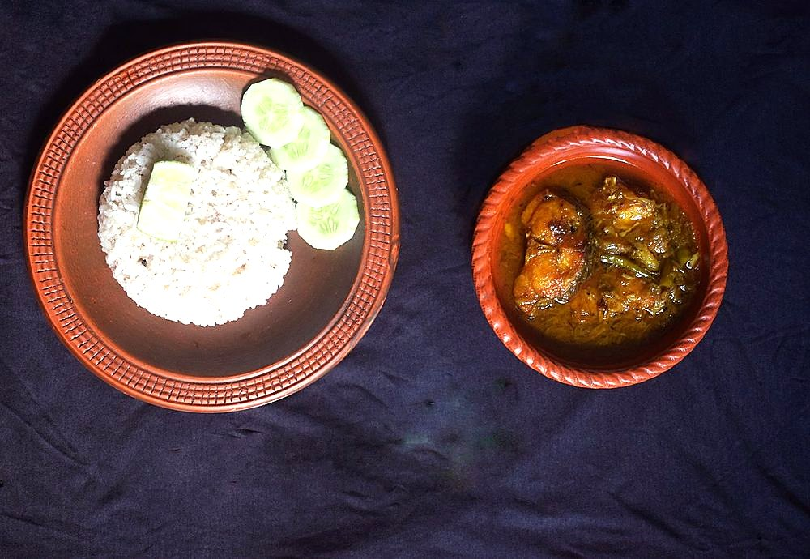

Contains: fish, mustard
Ingredients
Quantities for 4.
- 600g seer or pomfret, cut into thick steaks Fishany firm-fleshed fish that will not fall apart
- 1 1/4 cups, freshly grated Coconut
- 8 dried, stems snapped off Kashmiri Chilli
- 1 tbsp Coriander Powder
- 1/2 tsp Cumin Seeds
- 1/4 tsp Fenugreek Seeds
- 1/2 tsp Black Pepper
- 3/4 tsp Turmeric
- 6 cloves Garlic
- 1 medium, finely chopped Onion
- 5 dried petals Kokumtamarind will do at a pinch but the colour and the clean sourness change
- 3 tbsp Coconut Oil
- 1/2 tsp Mustard Seeds
- 1 sprig Curry Leaves
- 2 cups Water
- to taste Salt
Cookware
stovetop, blender
Checked against the ingredient list for ten allergens: milk, egg, fish, crustaceans, tree nuts, peanuts, sesame, mustard, soy and gluten. Brands vary, so read the label on anything new to you.
Before you start
- Rub the fish with 1/4 tsp turmeric and 1/2 tsp salt and leave it 15 minutes, then rinse and pat dry.
- Soak the kokum in 1/2 cup warm water for 15 minutes.
- Grate the coconut before you start. The grinding is the only fiddly part of this curry.
Method
- Warm 1 tsp coconut oil in a pan and roast the chillies over low heat for 1 minute until they puff slightly and smell toasted.
- Add the coriander powder, cumin, fenugreek and pepper and roast 45 seconds more, then take the pan off the heat.Fenugreek burns faster than anything else here. If it goes dark brown, start the spice roast again.
- Grind the roasted spices with the grated coconut, garlic and the remaining turmeric and 3/4 cup water into a smooth, thick orange paste.
- Heat 2 tbsp coconut oil in a wide pan, pop the mustard seeds and add the curry leaves.
- Cook the onion until soft and just turning gold at the edges, about 6 minutes.
- Pour in the ground masala and 1 1/4 cups water, add the kokum with its soaking liquid and salt, and bring it to a gentle simmer.
- Simmer uncovered for 10 minutes until the raw coconut smell is gone and the gravy thickens enough to coat a spoon.Stir every couple of minutes. Ground coconut catches on the base of the pan very easily.
- Slide the fish steaks in in a single layer, spoon gravy over them and cook 7 to 8 minutes without stirring.Never stir fish curry. Tilt and swirl the pan instead, or you will end up with flakes in gravy.
- Drizzle over the last 1 tsp raw coconut oil, cover and let it stand 10 minutes off the heat before serving with red rice.
Safe temperatures: Fish is done at 63°C / 145°F, or when it turns opaque and flakes easily. Reheat leftovers to 74°C / 165°F. FoodSafety.gov
Storage
Best eaten the day it is made, but keeps 2 days refrigerated. Reheat on the lowest flame just until it steams; boiling will shred the fish.
Nutrition Good estimate
High protein: 32 g a serving, 35% of the calories
| Per serving314 g | Per 100 g | |
|---|---|---|
| Calories | 372 kcal | 119 kcal |
| Protein | 32.5 g | 10 g |
| Carbohydrate | 11.4 g | 4 g |
| of which sugars | 3.8 g | 1 g |
| Fibre | 3.9 g | 1 g |
| Fat | 22.1 g | 7 g |
| of which saturated | 16.5 g | 5 g |
| of which unsaturated | 3.6 g | 1 g |
Ingredients given to taste count as zero, so the real figures run a little higher. Nearest database match used for curry leaves, kokum. Estimated from raw ingredients using USDA FoodData Central.
More like this: Gluten-free Indian recipes · Dairy-free Indian recipes · Karnataka recipes
Times, yields, allergens and nutrition are guidance. Use your own judgement on doneness and on storing. More in About.